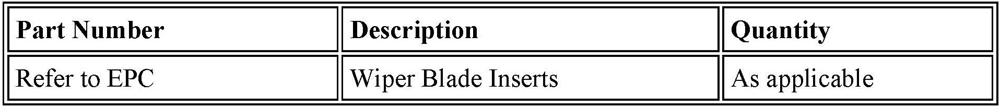

Wipers/Washers - Maintenance Program Wiper Inserts
SI B61 06 03General Electrical Systems
April 2013
Warranties
This Service Information bulletin supersedes SI 61 06 03 dated February 2010.
[NEW] Please read this Service Information bulletin in its entirety; the content has been completely updated.
[NEW] designates changes to this revision
SUBJECT
BMW Maintenance Program: Replacement Wiper Inserts
MODEL
All
INFORMATION
The BMW Maintenance Programs allow for the replacement of wiper blade inserts:
^ At intervals of 12 months or longer, only when necessary, for all models The replacement interval begins on the vehicle's original in-service date.
This policy supersedes all other statements concerning wiper blade maintenance replacement intervals (front and rear when applicable).
Note:
There is no required replacement at 12 months.
Wiper Blade and Insert Care
Regularly clean the wiper blade assemblies with soapy water to avoid streaking.
Windshield Care
Wax, dirt and road film buildup on the windshield can cause streaking, poor wiper operation and premature wear of the wiper blade inserts. The windshield should be cleaned regularly to remove contamination. Use BMW approved car care products to clean and care for the vehicle.

PARTS INFORMATION
It is important to use the "Set" part numbers, which contain both front wiper blades, when available.
WARRANTY INFORMATION
Covered under the terms of the BMW Maintenance Programs.